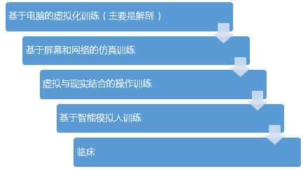
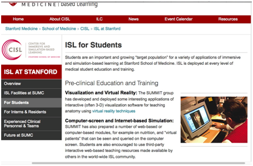
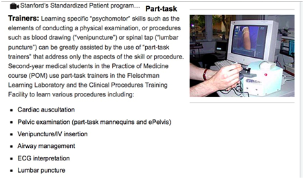
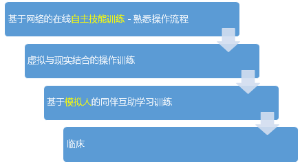
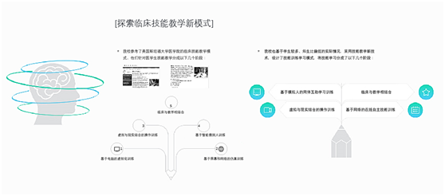

首页 < 医学教育改革探索
- 技能教学新模式
- 医教现代教育技术应用
- 智慧医学教育中心建设
技能教学新模式
我校参考了美国斯坦福大学医学院的临床技能教学模式，他们针对医学生技能教学分成以下几个阶段：
  我校临床专业学生多，师生比偏低，这也是大部分？？我校也基于学生较多、师生比偏低的实际情况，采用技能教学新技术，设计了技能训练学习模式，将技能学习分成了以下几个阶段：
在线技能训练本着学生自主学习的原则，目的在于让学生充分练习并掌握操作流程；
虚拟与现实结合的操作训练，让学生在实物上进行模拟仿真操作，训练学生实际操作能力，同时，设备支持自动纠错和评价，让学生在纠错反馈中改进，结合教师的当面指导，有利于学生深入掌握技能。
对于使用模型人进行训练这个环节，2016年10月起，我校创新性采用同伴互助学习（PeerTutoring）模式， 专门制订了学生互助测评使用的测评表，让学生分小组互助测评（测评结果不作为成绩依据），并对测评进行小组讨论。我校将进行对照试验。
这一教学模式在每个学习阶段，采用最适合的教学训练手段，例如，在学生对于流程都不了解时，直接使用模型或虚拟训练设备进行训练，一方面在设备资源不足的情况下，学生的训练机会不足，一方面造成不必要的损耗，使用在线方式，让学生可以不限次数的训练整体流程。在学生能够充分掌握流程后，即可进行进一步的训练。这样既增加了训练机会，又有效控制了损耗。
医教现代教育技术应用
智慧医学教育中心建设
新技能中心建设使用基于人工智能、大数据、虚拟现实、智能传感技术、智慧化系统工具等医学现代教育技术，来帮助老师、学生，提高整体教学、学习效率，我们将这套思路方法称为智慧医学教育。一方面把老师工作当中低效重复的工作由信息化系统高效率的工作代替，例如重复讲同样的课、点名、预约实验室，改成系统自动考勤、课程同步直播、开放实验室管理；另一方面把教师的部分教学经验和专业知识植入系统，以智能化标准化的方法对学生的教学训练给予反馈指导和评价。具体内容包括：我们利用智能技术辅助教师，通过信息化技术减轻教师负担、提高教学效率、延伸教师能力；利用技术手段强化学生自主学习、互助学习；建立教学大数据，实现形成性评价；信息化技术提升运营效率。